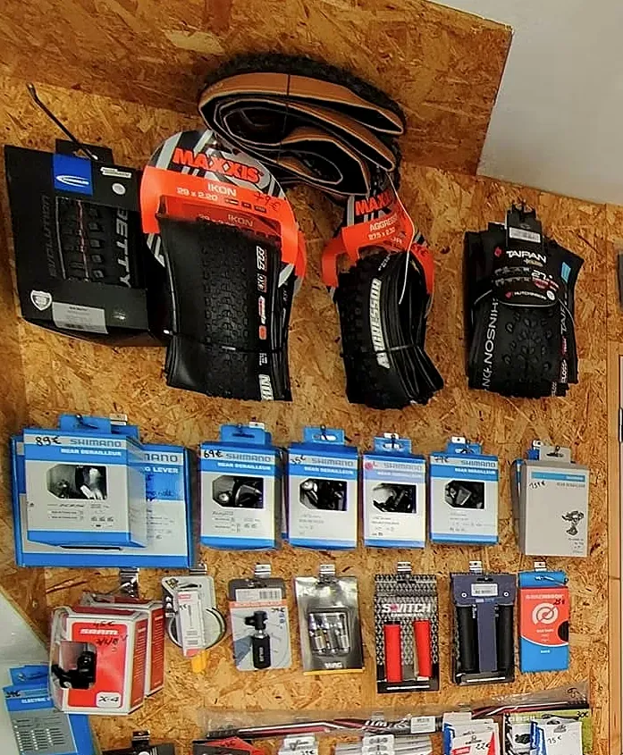
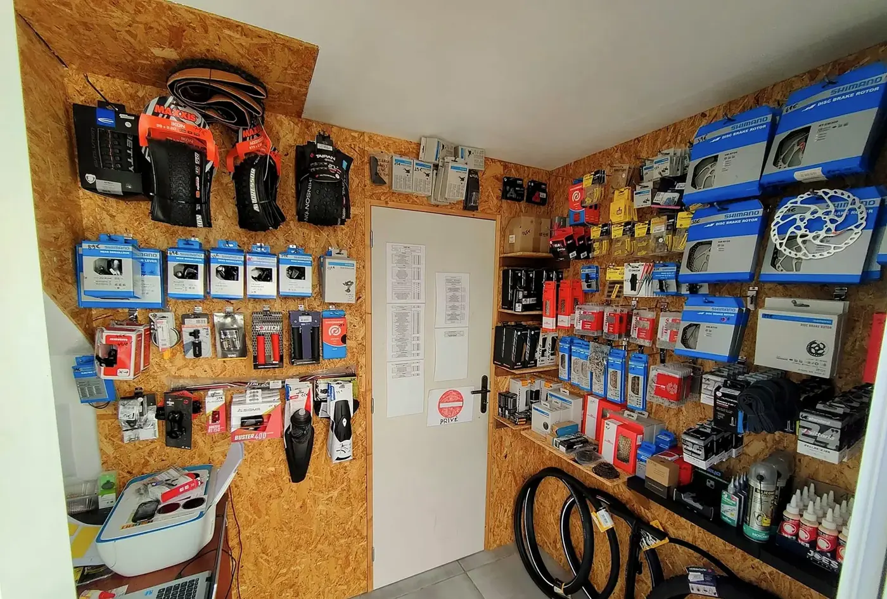

Réparation
Des freins qui serrent franchement, des vitesses qui passent net, des pneus qui tiennent la route : Séb remet chaque vélo en forme.

Un atelier de quartier pour tous ceux qui roulent dans le Sud : réparation, entretien et révision, pièces détachées et location de vélos de route.
176 rue Mahé de Labourdonnais · Petite-Île · lundi, mardi, jeudi, vendredi · 9h–12h / 13h–17hSéb répare, entretient et fournit des pièces, dans son atelier de la rue Mahé de Labourdonnais. Chaque vélo repart réglé avec soin, et vous savez exactement ce qui a été fait.
« Je remets votre vélo en forme, et je vous explique clairement ce qui a été fait. »Séb, sur sa page Facebook
Freins, vitesses, pneus, transmission : on remet votre vélo en forme, avec des conseils clairs.
Des freins qui serrent franchement, des vitesses qui passent net, des pneus qui tiennent la route : Séb remet chaque vélo en forme.
Un vélo resté au garage depuis des mois ? Apportez-le, on le remet en route.
Avant toute intervention, je vous dis ce qu'il faut faire.
Pneus, dérailleurs, disques de frein, chaînes, cassettes, lubrifiants : un mur entier de pièces, à portée de main.
Envie de goûter aux routes du Sud sur un vélo de route ? Séb en propose à la location : écrivez-lui pour réserver le vôtre.
Chez Séb, les pièces sont rangées comme dans un atelier de passionné : pneus route et VTT en haut, dérailleurs et poignées au centre, disques de frein et chaînes sur la droite, huiles et lubrifiants sur l'étagère du bas.


La petite routine de Séb avant chaque sortie. Cochez au fur et à mesure 😉
Graissez-la légèrement, surtout après une sortie sous la pluie.
Le littoral de Petite-Île, les hauts, le Sud sauvage… Séb partage les plus belles idées de sortie.
« Un vélo bien entretenu, c'est un cycliste plus confiant, plus rapide et surtout, plus heureux sur les routes et les chemins. »
Séb le vélociste, publication Facebook du 10 novembre 2024Pour un cycliste du Sud, le plus beau cadeau tient parfois dans une révision ou une belle pièce choisie avec Séb.
| Lundi | 9h–12h · 13h–17h |
| Mardi | 9h–12h · 13h–17h |
| Mercredi | Jour de repos |
| Jeudi | 9h–12h · 13h–17h |
| Vendredi | 9h–12h · 13h–17h |
176 rue Mahé de Labourdonnais
97429 Petite-Île, La Réunion
Téléphone : 0692 88 66 30
E-mail : seblevelociste@gmail.com